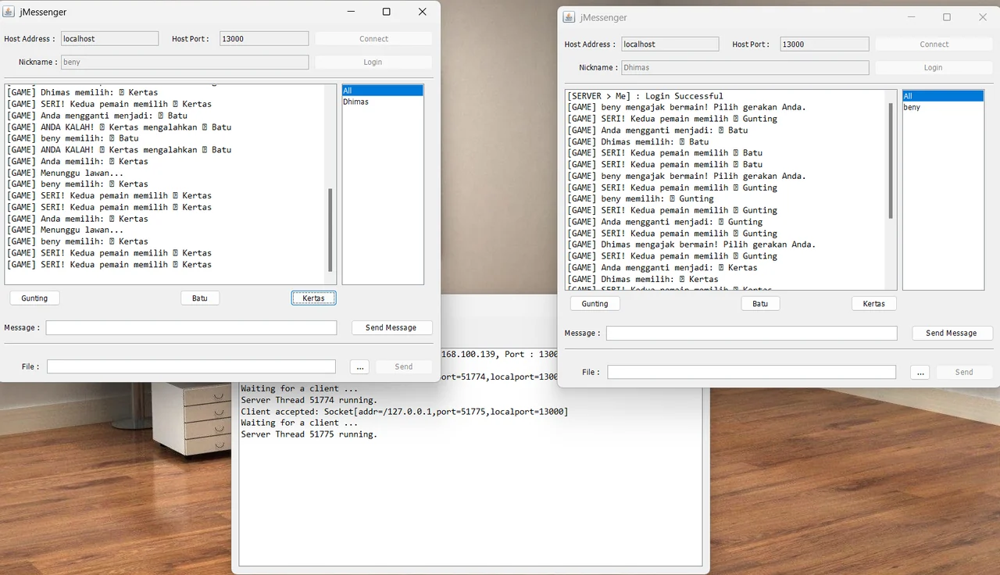

Dua client jMessenger bermain gunting-batu-kertas, dengan jendela server di belakang.
- 2025
- Java
- Swing
- Socket TCP
Aplikasi chat desktop berbasis Java (Swing) dengan arsitektur client-server lewat socket TCP. Selain mengobrol, dua pemain bisa saling menantang bermain gunting-batu-kertas langsung dari jendela chat.
Tentang project
Project ini dibuat dengan Java, bukan JavaScript, dan antarmukanya dirancang dengan GUI Builder NetBeans. Server dan client berkomunikasi lewat objek Message (tipe, pengirim, isi, penerima) yang dikirim melalui socket pada port 13000.
Fitur chat
- Server dengan jendela log yang menampilkan koneksi client; dirancang untuk dua pengguna sekaligus.
- Login dengan nickname dan daftar pengguna yang sedang online.
- Pesan ke semua ("All") atau pesan pribadi ke satu pengguna.
- Kirim dan terima file antar pengguna.
- Riwayat percakapan.
Game gunting-batu-kertas
- Pilih lawan dari daftar pengguna, lalu tekan Gunting, Batu, atau Kertas.
- Pesan [GAME] di jendela chat menampilkan ajakan bermain, status menunggu lawan, dan hasil: menang, kalah, atau seri.
Versi ular tangga
Folder project juga memuat versi lain yang memakai permainan ular tangga dua pemain: papan 35 petak dengan tangga dan ular, dadu acak 1–6, dan bidak yang memantul mundur bila melewati petak terakhir.
Eksperimen tambahan
- Perintah "api" yang membaca tabel MySQL lewat JDBC dan mengirim hasilnya ke client.
- Server socket kecil untuk menguji koneksi dari halaman PHP (port 12000).
Menjalankan
- Jalankan jServer lebih dulu.
- Jalankan dua instance jMessenger, isi host localhost dan port 13000, lalu login dengan nickname yang berbeda.
- Pilih lawan di daftar pengguna dan mulai bermain.